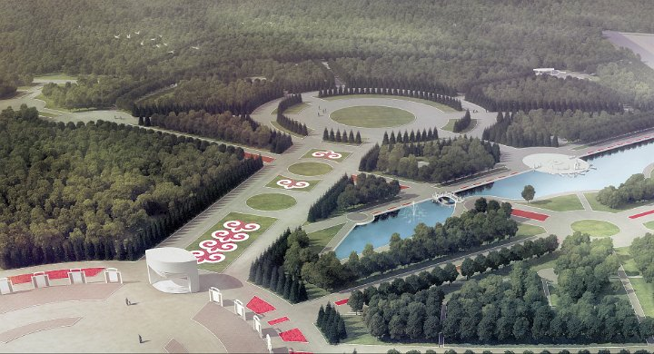

|
|

Состав и содержание работ по планированию объектов ландшафтной архитектуры
Устройство ландшафта частных владений признано сферой влияния ландшафтной архитектуры — отрасли, возникшей на границе архитектуры, паркостроения и садоводства и так называемого ландшафтного дизайна. Конструирование ландшафтов с заданными свойствами — занятие не новое, уходящее корнями в Средневековье, когда при монастырях устраивались первые сады и аптекарские огороды. Позднее методы русской ландшафтной архитектуры выкристаллизовывались в ходе оформления дворянских усадеб, позднее — дворцовых и городских парков старой России. Нельзя не отметить существование школы ландшафтных архитекторов советской эпохи, создавших крупные парковые ансамбли наших городов в середине XX в., потративших много сил на разработку методов оформления улиц и площадей. Ценная и до сих пор не утратившая своего значения методология ландшафтной архитектуры была разработана в рамках «лесной науки» в процессе создания и оформления лесопарковых поясов и пригородных зеленых зон.
В этом отношении развивающаяся на наших глазах (в последние 10 — 15 лет) новая ландшафтная архитектура представляет собой не столько методологию, сколько наспех заимствованный зарубежный опыт и «раскрученный» бизнес, базирующийся на привлеченных и не всегда корректно применяемых технологиях. Безусловный уклон в дизайнерские задачи, порожденный вкусами новых землевладельцев, почти совершенно заслонил проблематику ландшафтной экологии: создается впечатление (усиливаемое многочисленными изданиями на темы ландшафтного дизайна), что эстетическую зеленую композицию с заданными свойствами по желанию заказчика можно сформировать практически в любом месте.
К сожалению, у практиков современной ландшафтной архитектуры отсутствует понимание того обстоятельства, что дизайнерские задачи не должны заслонять (ни по значимости, ни по очередности постановки) задач ландшафтной экологии: украшательство на месте съеденного проволочником картофельного поля или на болоте, побывавшем под фрезерными торфоразработками, приведет новоявленных владельцев к скорому экологическому тупику, ибо, сколько бы сил и средств не было потрачено на обустройство отдельного участка, внешняя экосистема вмещающего ландшафта продолжает функционировать и требовать неких общих (в том числе инженерных) решений для своего оздоровления. Вообще же попытки устроения дизайнерского рая на экологически неблагополучном участке напоминают нанесение макияжа на нездоровое лицо (как по сути, так и по достигаемому эффекту).
Закономерности ландшафтной экологии и методы ландшафтного планирования сохраняют свое значение и на уровне локального ландшафтного строительства. Ландшафтный план, разрабатываемый для формирования искусственного фрагмента среды с детальной проработкой состояния отдельных компонентов, приобретает форму ландшафтного проекта, но точную границу между этими двумя видами проектной деятельности провести едва ли возможно. Разбивочный чертеж клумбы или посадочный дендроплан дачи в четыре сотки навряд ли могут составить содержательную задачу для ландшафтного планировщика. Но несколько более крупная усадьба, владелец которой заинтересован в комплексном исследовании компонентов ландшафта и готов выслушать предложения по дифференциации участка на функциональные зоны, представляется уже вполне заслуживающей внимания. Ведь как не велик разброс между объектами, которые сегодня охвачены безусловно позитивной манией обустройства, он отражает спектр реальных потребностей, а, следовательно, и очертания рынка, на котором ландшафтному планировщику приходится предлагать свои услуги.
Попытаемся в первом приближении очертить круг наиболее распространенных объектов частного ландшафтного проектирования:
- крупные частные владения (дачи, приусадебные участки коттеджей, значительные территории крупных загородных домов);
- небольшие туристско-рекреационные комплексы в сельской местности или среди дикой природы;
- крупные спортивно-рекреационные (в том числе профессионально ориентированные с соревновательными трассами) комплексы;
- отдельные крестьянские (фермерские) хозяйства;
- вновь осваиваемые участки с индивидуальной застройкой (в том числе коттеджные поселки);
- реконструируемые исторические объекты ландшафтной архитектуры, попавшие в частные руки (старые усадьбы, парки).
Каким образом эффективно использовать методы ландшафтного планирования при обустройстве столь разных объектов? Как доказать инвестору необходимость предварительных комплексных инженерно-экологических изысканий (предпринятых на базе ландшафтного подхода) и последующей разработки более или менее детального ландшафтного плана? Готового ответа на эти вопросы нет: диалог с инвестором всегда не прост, а его способность понять (и принять) целесообразность ландшафтного планирования зависит от ряда сложно прогнозируемых факторов (начиная от уровня личной культуры и заканчивая воображением и способностью представить конечный результат). Многое определяется поведением смежников: архитектора и инженера, которые должны увидеть в экологе союзника, а в ландшафтном проекте — источник не ограничений, но вдохновения и новых весьма продуктивных идей, а затем помочь продемонстрировать увиденное заказчику (инвестору).
Безусловно, важно продемонстрировать содержание ландшафтного плана (проекта), и не в виде красивых эскизов (как это принято в ландшафтном дизайне), а в виде перечня узких мест и слабых звеньев, которые могут быть «расшиты» средствами экологического проектирования. Такого рода перечень может представлять собой рабочую программу, которая после обсуждения с заказчиком будет трансформироваться в техническое задание.
Указать содержание технического задания и состав работ для всех возможных вариантов ЛП частных объектов едва ли возможно, однако представляется уместным привести несколько позиций, которые должны быть раскрыты в любом проекте независимо от его специфики:
- выдача задания на топографическую съемку и получение качественной цифровой картографической основы участка проектирования и ближайших окрестностей;
- изучение правового статуса участков, входящих в состав территории, определение источника правовых конфликтов, разработка и обоснование адекватного правового статуса;
- определение специфики предоставляемого туристско-рекреационного продукта (для туркомплексов, сельских гостиниц и крупных владений с выраженным рекреационным использованием);
- целевая ландшафтно-экологическая характеристика территории с оценкой потенциальной емкости вмещающего ландшафта и составляющих его экосистем по отношению к предполагаемым видам нагрузки;
- морфодинамический анализ и оценка проявлений экзогенной геодинамики;
- разработка рекомендаций по инженерному благоустройству территории — моделированию рельефа и дренажу, устройству поверхностных водотоков;
- анализ дифференциации территории на геотопы (урочища, микроландшафты) и оценка устойчивости отдельных единиц к предполагаемой нагрузке (различные виды рекреационных занятий и т.д.);
- разработка схемы функционального зонирования территории с учетом складывающегося и перспективного характера нагрузки на различные фрагменты участка;
- анализ пейзажной композиции и разработка предложений по корректировке визуальных свойств участка и его отдельных фрагментов;
- разработка проекта ландшафтно-экологического обустройства различных функциональных зон объекта;
- разработка предложений по технике и последовательности работ по ландшафтно-экологическому обустройству территории;
- разработка предложений по организации мониторинга за состоянием территории объекта;
- разработка предложений по организации экологичного менеджмента (для крупных объектов).
Представленный перечень может быть дополнен в зависимости от целевого назначения объекта. Попытаемся раскрыть более подробно содержание некоторых разделов.
Список использованной литературы:
1. Колбовский Е. Ю. Ландшафтное планирование : учеб. пособие для студ. высш. учеб. заведений. - М. : Издательский центр "Академия", 2008. - 336 с. |